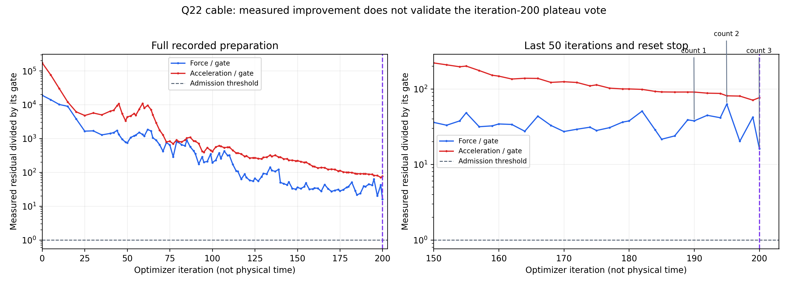

Q17–Q32 stopping-policy audit
Actual reset defect confirmed. Six stop decisions change; no new stationary pass.
Decision CSV · Assessment JSON · 881-decision replay

Every plotted point is a stored observation. The dashed horizontal line is the measured admission threshold; no continuation or future stability is inferred. The purple line marks the reset and unsupported final vote.
# Q17–Q32 stopping-policy audit
Date: 20 November 2026, Australia/Melbourne. Machine-readable audit timestamps include UTC and Melbourne.
## Finding
The stopping defect is confirmed on actual saved decisions. Six preparation stopping decisions become continuation decisions under the corrected epoch and evidence rules. The other twenty-three preparation stops remain stops on these recorded trajectories. Five representation-unresolved cases are unchanged.
This does not create a stationary candidate. All 34 measured broad endpoints still fail stationary preparation; the 29 representation-admitted endpoints also fail boundary admission. The corrected logic justifies a limited recovery of affected decisions, not a claim that those branches will converge or pass motion.
## Verification and retained work
The uploaded archive SHA-256 is `1967a35025b750e89f52aa6d6ca6c34d525628c9573521e17e62dd01d63705d0`. ZIP CRCs and all 775 compact payload hashes pass, with complete coverage. The 34-file handover manifest was reconstructed and matches the recorded package identity. All 128 copied numerical-source files match the declared source hashes.
There are 339 local full-field declarations, but the NPZ contents were not uploaded; this audit does not independently verify those fields or replay field metrics. All 881 saved adaptive decisions across 29 branches reproduce using the original code and the original saved fit objects. Terminal-window curve fitting was independently repeated for 87 metric windows; all accepted-model sets agree. Twelve windows have too few observations for fits and are correctly empty. The largest absolute difference in held-out relative error on refit is approximately 6.72e-7; equality of every fitted coefficient is not claimed.
The original broad stage spent 5,692 attempts. Q18 refinement spent another 33 attempts, giving 5,725 total. Its latest checkpoint pointer is iteration 32; its latest metric observation is iteration 30. The interrupted attempt was charged before execution. Do not report 33 accepted iterations or metrics at iteration 32. No mesh branch, domain comparison or candidate-motion case completed. The 25 mesh-capacity deferrals are now explicitly present.
## Actual Q22 cable stop
The last decisions were:
| Decision iteration | Epoch | Recorded plateau counter | New-epoch observations |
|---|---:|---:|---:|
| 190 | 0 | 1 | Adequate pre-reset window |
| 195 | 0 | 2 | Adequate pre-reset window |
| 200 | 200 | 3 — stop | 1 |
At 200 the last observation was compared with itself. Both relative improvements were recorded as zero, all model panels recorded insufficient observations, and the old counter of two was carried into the new epoch. The measured field had not suddenly become a proven plateau. In fact, from iteration 195 to 200, force decreased from 0.0062901703 to 0.0016192600 and maximum acceleration from 0.0808863741 to 0.0765043238. The force history is oscillatory; the final improvement is not a validated forecast of gate crossing.
The endpoint remains about 16.2 times the force gate and 76.5 times the acceleration gate, with failed boundary admission. Correcting this decision does not retrospectively pass any numerical gate.
## Corrected policy and affected branches
The correction resets plateau memory at the optimizer epoch boundary and requires at least the existing eight distinct fit-window observations before counting stagnation. Evidence insufficiency is reported as unknown joint progress rather than measured zero progress. The 150-iteration exploratory floor and three supported decisions to stop remain unchanged. Model-fitting functions, scientific gates, optimizer, precision, grid, box and the 300-attempt branch ceiling are unchanged.
| Branch | Stopped iteration | Corrected counter | Unused original attempts |
|---|---:|---:|---:|
| q18-axial-6-3 | 217 | 1 | 83 |
| q21-axial-7-3 | 210 | 0 | 90 |
| q22-cable-source-family | 200 | 0 | 100 |
| q24-torus72-5-2 | 210 | 0 | 90 |
| q30-axial-6-5 | 210 | 0 | 90 |
| q30-torus72-8-2 | 215 | 1 | 85 |
Total remaining allocation for these six branches: **538 attempts**, within their original budgets. Q18 and Q30 torus had ten post-reset observations at their final decisions, but two earlier unsupported short-window votes had already advanced their counters; the corrected final count is one, not three. The four other affected endpoints lack even eight post-reset observations at the old stop.
The replay also verifies that action, batch size and observation interval at all recorded pre-terminal continuation decisions remain identical. Thus this correction changes the six stop points without inventing observations after them. Future trajectories remain unknown. It does not explain away the twenty-three other stops or the universal boundary failures.
## What is included
- `ASSESSMENT.html`: browser report, complete decision table and measured Q22 plots.
- `ASSESSMENT.json`, `DECISIONS.csv`: structured outcomes.
- `results/VERIFICATION.json`, `REPLAY.json`, `REFITS.json`: integrity, full policy traces and terminal curve-refit checks.
- `original/fits.py`: unchanged policy for audit reproduction.
- `corrected/policy_v2.py`: validated policy correction, not installed into the campaign.
- `audit.py`, `test_policy.py`: offline replay and regression tests. Twelve tests pass.
- `data/source-evidence.zip`: unchanged uploaded compact evidence.
The audit can be reproduced locally without the zbook's full fields. There is no production continuation runner in this bundle. Do not copy policy_v2.py over the frozen original package: its explicit plateau-epoch API requires coordinated state and identity migration.
## Recommended next campaign
Keep the original campaign paused. Do not resume the unchanged recovery launcher, which would retain old terminal decisions and the old mesh queue.
A targeted local-workstation handover should:
1. Record this audit and preserve all original results, including the twenty-three reproduced preparation stops, five representation cases, boundary failures and deferrals.
2. Verify the six full float64 optimizer checkpoints and their source identities locally. Create a separate policy-versioned continuation record linked to the exact original checkpoint hashes; retain fields, optimizer memory, alpha, iteration, attempt counters and grids/boxes. Seed corrected plateau counters from the verified replay rather than copying the old stop counts.
3. Continue only those six branches within their unused allocations: 83, 90, 100, 90, 90 and 85 attempts respectively. Keep the same scientific gates and resource supervision. No whole-catalogue restart or expanded 300-attempt allocation is justified by this defect.
4. Reassess parent stationarity and boundary admission before choosing any new refinement queue. The old selected parents are all nonstationary, so their current mesh queue cannot lead to domain or candidate-motion tests under the registered parent gate. Keep Q18's partial old-parent refinement as a diagnostic; do not silently attach it to a changed parent checkpoint. Any later mesh allocation must account for its already spent 33 attempts and the original budget.
5. If corrected preparation still does not yield suitable parents, record that outcome and design a separate controlled domain/optimizer study. Do not lower gates or change box, spacing and optimizer together. Use validated curve fits and denser measurements around turns without imposing a zero asymptote.
GitHub publication, if included in that handover, must occur only on the local workstation. No GitHub interaction, simulation, package installation or modification of original evidence was performed by this audit.
All preparation stopping decisions